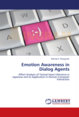

ML-Ask · system analizy afektu
Elementy emotywne, wyrażenia emotywne i 2D mapa afektu Russella — dla japońskiego.

ML-Ask — eMotive eLement and Expression Analysis system — to słownikowy, zależny od języka system automatycznej anotacji afektu dla wypowiedzi w języku japońskim. Opiera się na prostym założeniu lingwistycznym: stan emocjonalny mówcy przekazują wyrażenia emocjonalne pojawiające się w wypowiedziach emotywnych. ML-Ask najpierw rozstrzyga, czy zdanie w ogóle jest emotywne, a następnie — wyłącznie wewnątrz zdań emotywnych — szuka wyrażeń konkretnych typów emocji.
System opiera się na dwóch składnikach. Emotemy to słowa-sygnały oznaczające emotywność bez wskazywania konkretnej emocji — wykrzykniki (すごい sugoi), wyrażenia mimetyczne (わくわく wakuwaku), morfemy wulgarne (〜やがる -yagaru) oraz emotywne znaki interpunkcyjne („!”, „??”). Wyrażenia emotywne to słowa nazywające samą emocję — rzeczowniki (愛情 aijou, miłość), czasowniki (悲しむ kanashimu, smucić się), przymiotniki i utarte zwroty. Baza wyrażeń bazuje na słowniku Emotive Expression Dictionary autorstwa Akiry Nakamury, posortowanym na dziesięć klasycznych japońskich typów emocji (radość, gniew, smutek, strach, wstyd, sympatia, niechęć, podniecenie, ulga, zaskoczenie) — łącznie około 2 100 wyrażeń.
ML-Ask implementuje również Contextual Valence Shifters (Polanyi & Zaenen, 2006) — 108 japońskich wzorców negacji — i rzutuje wykrytą emocję na dwuwymiarowy model afektu Russella (walencja × pobudzenie), tak aby aplikacje wyższego rzędu mogły operować na nastrojach pozytywnie pobudzonych czy negatywnie wyciszonych zamiast na dziesięciu dyskretnych etykietach.
Preferowane cytowania
- Michal Ptaszynski, Pawel Dybala, Rafal Rzepka, Kenji Araki, "Affecting Corpora: Experiments with Automatic Affect Annotation System — A Case Study of the 2channel Forum". PACLING-09, Sapporo, 2009.
- Michal Ptaszynski, Pawel Dybala, Wenhan Shi, Rafal Rzepka, Kenji Araki, "A System for Affect Analysis of Utterances in Japanese Supported with Web Mining". J. Japan Society for Fuzzy Theory and Intelligent Informatics, 21(2), 2009. PDF ↗